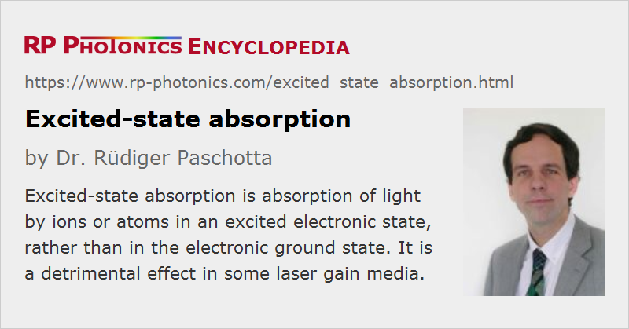

Excited-state Absorption
Acronym: ESA
Definition: absorption of light by ions or atoms in an excited electronic state, rather than in the electronic ground state
More general term: absorption
German: Absorption von angeregten Zuständen aus
Categories: lasers, physical foundations
How to cite the article; suggest additional literature
Author: Dr. Rüdiger Paschotta
In solid-state gain media, for example, it can occur that the population of the upper laser level leads not only to amplification by stimulated emission, but also to absorption processes for the pump or laser radiation where laser ions are excited to a higher-lying energy level. This additional loss can raise the threshold pump power and reduce the slope efficiency, and sometimes cause a laser to operate at a wavelength which is somewhat offset from that with the highest emission cross sections. Excited-state absorption can also occur with the pump wave; it can then be beneficial to optimize the pump wavelength for better efficiency.

ESA is a common problem particularly for broadband gain media such as transition-metal-doped crystals, but less so for rare-earth-doped crystals with their relatively narrow-bandwidth transitions. Of course, ESA is more likely to be relevant for laser ions with multiple electronic levels, such as erbium or thulium, whereas it is not possible for ytterbium.
ESA is also common in various saturable absorber materials such as Cr4+:YAG. Here, the ground state absorption can be fully bleached, but what remains even at rather high optical intensities is the excited-state absorption, which recovers much more rapidly. In effect, ESA causes nonsaturable losses (at least for nanosecond pulses), which amount to roughly one third of the saturable losses.
ESA in Upconversion Lasers
Although excited-state absorption is in most cases a detrimental effect, it can also be useful for upconversion pumping, where the excitation of higher-lying energy levels is required. This is exploited e.g. in some thulium-doped lasers (Figure 1), and also in other upconversion lasers. Rate equation models require the values of ESA cross sections (see below), in addition to the lifetimes of intermediate energy levels.
Calculating Effects of ESA
In some cases, it is relatively simple to include ESA in a laser model. For example, pump or signal ESA may simply lead to an additional absorption term, if ESA leads ions to levels from where they quickly relax to the upper laser level. In more complicated situations, such as the thulium level scheme discussed above, rate equation modeling may be applied.
Measurement of ESA Cross Sections
The measurement of excited-state absorption is more difficult than that for ground-state absorption. A common technique is based on the use of a modulated pump beam, creating a modulated population in a certain electronic level, and monitoring the transmission of the sample with a monochromator, a photodetector, and a lock-in amplifier. The spectra obtained essentially show the difference in laser gain and ESA, but can also contain contributions from other levels.
Questions and Comments from Users
Here you can submit questions and comments. As far as they get accepted by the author, they will appear above this paragraph together with the author’s answer. The author will decide on acceptance based on certain criteria. Essentially, the issue must be of sufficiently broad interest.
Please do not enter personal data here; we would otherwise delete it soon. (See also our privacy declaration.) If you wish to receive personal feedback or consultancy from the author, please contact him e.g. via e-mail.
By submitting the information, you give your consent to the potential publication of your inputs on our website according to our rules. (If you later retract your consent, we will delete those inputs.) As your inputs are first reviewed by the author, they may be published with some delay.
Bibliography
| [1] | P. R. Morkel et al., “Theoretical modeling of erbium-doped fiber amplifiers with excited-state absorption”, Opt. Lett. 14 (19), 1062 (1989), doi:10.1364/OL.14.001062 |
| [2] | R. I. Laming et al., “Pump excited-state absorption in erbium-doped fibers”, Opt. Lett. 13 (12), 1084 (1988), doi:10.1364/OL.13.001084 |
| [3] | S. Zemon et al., “Excited state cross sections for Er-doped glasses”, Proc. SPIE 1373, 21 (1991), doi:10.1117/12.24926 |
| [4] | Z. Burshtein et al., “Excited-state absorption studies of Cr4+ ions in several garnet host crystals”, IEEE J. Quantum Electron. 34 (2), 292 (1998), doi:10.1109/3.658716 |
| [5] | S. Kück et al., “Excited state absorption and stimulated emission of Nd3+ in crystals. Part 1: Y3Al5O12, YAlO3, and Y2O3”, Appl. Phys. B 67 (2), 151 (1998), doi:10.1007/s003400050486 |
| [6] | L. Fornasiero et al., “Excited state absorption and stimulated emission of Nd3+ in crystals. Part 2: YVO4, GdVO4, and Sr5(PO4)3F”, Appl. Phys. B 67, 549 (1998), doi:10.1007/s003400050543 |
| [7] | L. Fornasiero et al., “Excited state absorption and stimulated emission of Nd3+ in crystals. Part 3: LaSc3(BO3)4, CaWO4, and YLiF4”, Appl. Phys. B 68, 67 (1999), doi:10.1007/s003400050587 |
See also: absorption, gain media, saturable absorbers, upconversion, rate equation modeling
and other articles in the categories lasers, physical foundations
|  |
If you like this page, please share the link with your friends and colleagues, e.g. via social media:
These sharing buttons are implemented in a privacy-friendly way!